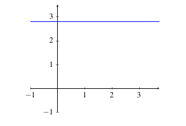
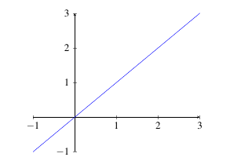
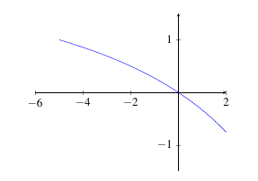
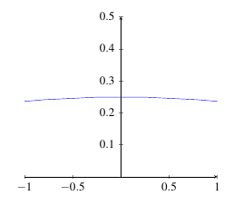
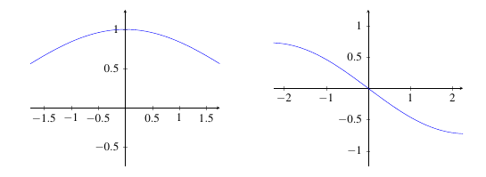
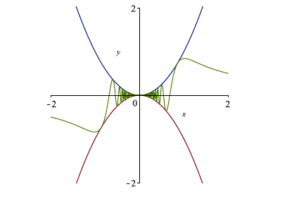
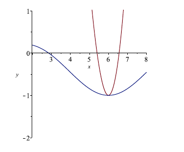
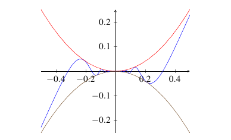

2.3 Calculating Limits Using the Limit Laws
The Limit Laws
It should be clear by now that using a table to calculate a limit is both tedious and potentially inaccurate. In this section, we will develop some rules that will help us quickly and accurately compute limits.
Theorem (Limit Laws): Let \(f\) and \(g\) be functions, \(c\) a constant and \(a,n \in \mathbb{R}\). Suppose \(\displaystyle\lim_{x \rightarrow a} f(x) = L\) and \(\displaystyle\lim_{x \rightarrow a} g(x) = M\) with \(L,M \in \mathbb{R}\). The following properties hold:
- \(\displaystyle\lim_{x \rightarrow a} c = c\) (Constant Law)
- \(\displaystyle\lim_{x \rightarrow a} x = a\) (Identity Law)
- \(\displaystyle\lim_{x \rightarrow a} f(x) \pm g(x) = L \pm M\) (Sum and Difference Laws)
- \(\displaystyle\lim_{x \rightarrow a} cf(x) = c \displaystyle\lim_{x \rightarrow a} f(x) = cL\) (Constant Coefficient Law)
- \(\displaystyle\lim_{x \rightarrow a} f(x) \cdot g(x) = \displaystyle\lim_{x \rightarrow a} f(x) \cdot \displaystyle\lim_{x \rightarrow a} g(x) = L \cdot M\) (Multiplication Law)
- \(\displaystyle\lim_{x \rightarrow a} \frac{f(x)}{g(x)} = \dfrac{\displaystyle\lim_{x \rightarrow a} f(x)}{\displaystyle\lim_{x \rightarrow a} g(x)} = \dfrac{L}{M}\), with \(M \not = 0\) (Division Law
- \(\displaystyle\lim_{x \rightarrow a} \left( f(x) \right)^n = \left(\displaystyle\lim_{x \rightarrow a} f(x) \right)^n = L^n\) (Power Law)
We will prove all of these laws in . For now, we will illustrate each law with examples.
The constant law deals with constant functions (horizontal lines). Since \(f(x)\) is always equal to \(c\), it doesn’t matter what \(x\) approaches. The resulting limit is always \(c\).
|  |
|---|
Example: Evaluate \(\displaystyle\lim_{x \rightarrow 3} 10\).
Solution: Since 10 is a constant, we can use the Constant Law from the Limit Laws theorem part 1 to see \(\displaystyle\lim_{x \rightarrow 3} 10 = 10\).
The Identity Law deals with the function \(f(x) = x\). Since the \(y\) and \(x\) values are the same, whatever value \(x\) approaches, \(y\) will have to approach the same value.
|  |
|---|
Example: Evaluate \(\displaystyle\lim_{x \rightarrow 2} x\).
Solution: We recognize this as the Identity Law (from the Limit Laws theorem part 2). Using that result, we find \(\displaystyle\lim_{x \rightarrow 2} x = 2\).
The Sum Law tells us that the limit of a sum is the sum of the individual limits. That is, to evaluate the limit of a sum, simply deal with each limit individually.
Example: Evaluate \(\displaystyle\lim_{x \rightarrow -2} (x + 5)\).
Solution: Both \(f(x) = x\) and \(g(x) = 5\) are functions. So, we can use the Sum Law (Limit Laws theorem part 3). So, \[\begin{align*} \displaystyle\lim_{x \rightarrow -2} (x + 5) &= \displaystyle\lim_{x \rightarrow -2} x + \displaystyle\lim_{x \rightarrow -2} 5 && \text{Sum Law}\\ &= -2 + 5 &&\text{Identity and Constant Laws}\\ &= 3. \end{align*}\]
In essence, the Subtraction Law works the same as the Addition Law (with the obvious change).
Example: Evaluate \(\displaystyle\lim_{x \rightarrow 1} (3 - x)\).
Solution: Both \(f(x) = 3\) and \(g(x) = x\) are functions. So, we can use the Difference Law (Limit Laws theorem part 3). So, \[\begin{align*} \displaystyle\lim_{x \rightarrow 1} (3 - x) &= \displaystyle\lim_{x \rightarrow 1} 3 - \displaystyle\lim_{x \rightarrow 1} x && \text{Difference Law}\\ &= 3 - 1 &&\text{Identity and Constant Laws}\\ &= 2. \end{align*}\]
The Constant Coefficient Law tells us that if we have a constant times a function, we can move the constant outside of the limit and evaluate the limit of the function and then multiply the result by the constant.
Example: Evaluate \(\displaystyle\lim_{x \rightarrow 5} 8x\).
Solution: We can use the Constant Coefficient Law (Limit Laws theorem part 4). So, \[\begin{align*} \displaystyle\lim_{x \rightarrow 5} 8x &= 8\displaystyle\lim_{x \rightarrow 5} x && \text{Constant Coefficient Law}\\ &= 8(5) &&\text{Identity Law}\\ &= 40. \end{align*}\]
We now try to put the first 4 laws into use in the same example. In particular, we can now evaluate limits of linear functions.
Example: Evaluate \(\displaystyle\lim_{x \rightarrow 2} 3x - 7\).
Solution: Some of these steps can be combined. We show them all here for clarity. \[\begin{align*} \displaystyle\lim_{x \rightarrow 2} 3x - 7 &= \displaystyle\lim_{x \rightarrow 2} 3x - \displaystyle\lim_{x \rightarrow 2} 7 && \text{Difference Law}\\ &= 3\displaystyle\lim_{x \rightarrow 2} x - \displaystyle\lim_{x \rightarrow 2} 7 && \text{Constant Coefficient Law}\\ &= 3(2) - 7 && \mbox{Identity and Constant Laws}\\ &= 6 - 7\\ &= -1. \end{align*}\]
The Multiplication Law tells us that if we have the limit of a product, we can apply the limit to each of the functions being multiplied together then multiply the result.
Example: Evaluate \(\displaystyle\lim_{x\to 6} x^2\).
Solution: Some of these steps can be combined. We show them all here for clarity. \[\begin{align*} \displaystyle\lim_{x\to 6} x^2 & = \displaystyle\lim_{x\to 6} (x\cdot x)\\ & = \left(\displaystyle\lim_{x\to 6} x\right)\left(\lim_{x\to6} x\right)&& \mbox{Multiplication Law}\\ & = (6)(6) && \mbox{Identity Law}\\ & = 36 \end{align*}\]
The Power Law says that if we have a limit of a power, we can take the limit of the function inside the power then raise the result to the appropriate power. Be careful that the limit is non-zero if your power is negative.
Example: Evaluate \(\displaystyle\lim_{x\to -1} (3 + x)^5\).
Solution: Some of these steps can be combined. We show them all here for clarity. \[\begin{align*} \displaystyle\lim_{x\to-1} (x+3)^5 & = \left(\displaystyle\lim_{x\to-1} (x+ 3)\right)^5 && \mbox{Power Law}\\ & = \left(\displaystyle\lim_{x\to-1} x + \displaystyle\lim_{x\to-1} 3\right)^5 && \mbox{Addition Law}\\ & = ( -1 + 3)^5 && \mbox{Identity and Constant Laws}\\ & = 2^5\\ & = 32 \end{align*}\]
Example: Evaluate \(\displaystyle\lim_{x\to-2} (5 {x}^4 + 6 {x})\).
Example: Some of these steps can be combined. We show them all here for clarity. \[\begin{align*} \displaystyle\lim_{x\to-2} (5 {x}^4 + 6 {x}) & = \displaystyle\lim_{x\to-2} (5 {x}^4) + \displaystyle\lim_{x\to-2} (6 x) && \mbox{Addition Law}\\ & = 5\,\displaystyle\lim_{x\to-2} ( {x}^4) + 6\,\displaystyle\lim_{x\to-2} x && \mbox{Constant Coefficient Law}\\ & = 5\left( {\displaystyle\lim_{x\to-2} x}\right)^4 + 6\, {\displaystyle\lim_{x\to-2} x} && \mbox{Power Law}\\ & = 5( {-2})^4 + 6( {-2}) && \mbox{Identity Law}\\ & = 5(16) - 12\\ & = 80 - 12\\ & = 68 \end{align*}\]
The Division Law works similar to the Power Law. Again, we must be careful that the limit of the denominator is non-zero.
Example: Evaluate \(\displaystyle\lim_{x\to -5}\frac{3 x}{ x-10}\).
Example: Some of these steps can be combined. We show them all here for clarity. \[\begin{align*} \displaystyle\lim_{x\to -5}\frac{3 x}{ x-10} & = \frac{\displaystyle\lim\limits_{x\to -5} (3 x)}{\displaystyle\lim\limits_{x\to -5} ( x-10)} && \mbox{Division Law}\\[6pt] & = \frac{3\,\displaystyle\lim\limits_{x\to-5} x}{\displaystyle\lim\limits_{x\to-5}( x- 10)} && \mbox{Constant Coefficient Law}\\[6pt] & = \frac{3\, {\displaystyle\lim\limits_{x\to-5} x}}{ {\displaystyle\lim\limits_{x\to-5} x} - \displaystyle\lim\limits_{x\to-5} 10} && \mbox{Subtraction Law}\\[6pt] & = \frac{3( {-5})}{ {-5} -10} && \mbox{Identity and Constant Laws}\\[6pt] & = \frac{-15}{-15}\\[6pt] & = 1 \end{align*}\]
Practice Problems
Determine the value of each of the following limits.
\(\displaystyle\lim_{x \rightarrow 5} \frac{x}{x+5}\)
\(\displaystyle\lim_{x \rightarrow 0} \frac{2x + 1}{x + 5}\)
\(\displaystyle\lim_{x \rightarrow -3} x^3 + 2x - 1\)
\(\displaystyle\lim_{x \rightarrow -4} x^5 + 3x^3 - x^2 + 20\)
\(\displaystyle\lim_{x \rightarrow -6} \left(3x^2 -10 \right)^4\)
\(\displaystyle\lim_{x \rightarrow 2} \left(5x - 6 \right)^{-2}\)
\(\displaystyle\lim_{x \rightarrow 1} \left(\frac{2x^2 + 1}{3x^3 - x + 1} \right)^2\)
\(\displaystyle\lim_{x \rightarrow 2} \left(\frac{x-1}{4x + 3} \right)^{-3}\)
Direct Substitution
We did the following example in the previous chapter.
|  |
|---|
Example: Evaluate \(\displaystyle\lim_{x\to -5}\frac{3 x}{ x-10}\).
Solution: Using limit laws, we see
\[\begin{align*}
\displaystyle\lim_{x\to -5}\frac{3 x}{ x-10} & = \frac{\displaystyle\lim\limits_{x\to -5} (3 x)}{\displaystyle\lim\limits_{x\to -5} ( x-10)} && \mbox{Division Law}\\[6pt]
& = \frac{3\,\displaystyle\lim\limits_{x\to-5} x}{\displaystyle\lim\limits_{x\to-5}( x- 10)} && \mbox{Constant Coefficient Law}\\[6pt]
& = \frac{3\, {\displaystyle\lim\limits_{x\to-5} x}}{ {\displaystyle\lim\limits_{x\to-5} x} - \displaystyle\lim\limits_{x\to-5} 10} && \mbox{Subtraction Law}\\[6pt]
& = \frac{3( {-5})}{ {-5} -10} && \mbox{Identity and Constant Laws}\\[6pt]
& = \frac{-15}{-15}\\[6pt]
& = 1
\end{align*}\]
If \(f(x) = \frac{3 x}{ x-10}\), we can see that \(f(-5) = 1\). There is no coincidence that \[\displaystyle\lim_{x\to -5}\frac{3 x}{ x-10} = f(-5)\] as we see from the following theorem.
Theorem (Direct Substitution Rule): If \(f\) is a polynomial or rational function, and \(a\) is in the domain of \(f\), then \[\lim_{ x \rightarrow a} f(x) = f(a).\]
Any function with the direct substitution property is called . We will see more on this in Chapter \(\ref{chap:Continuity}\) and prove Theorem \(\ref{DirectSubstitutionProperty}\).
Example: Evaluate \(\displaystyle\lim_{x\to -5}\frac{3 x}{ x-10}\).
Solution: Since the domain of \(f(x) = \frac{3 x}{ x-10}\) is all reals except \(x = 10\) (usually written \(\mathbb{R} - \{10\}\)) and \(x = -5\) is in the domain, we know that \[\displaystyle\lim_{x\to -5}\frac{3 x}{ x-10} = f(-5) = 1,\] by the direct substitution property.
Sometimes the direct substitution property does not work quite as easily as the previous example.
Example: Evaluate \(\displaystyle\lim_{x\to -1}\frac{x^3 - 1}{x-1}\).\
Solution: If \(f(x) = \frac{x^3 - 1}{x-1}\), then the direct substitution property does not apply since \(f(1)\) is undefined. So, we use some algebra. \[ \frac{x^3 - 1}{x-1} = \frac{(x-1)(x^2 + x + 1)}{x-1}.\] Since the numerator and denominator have a common factor of \(x-1\), we can cancel the common factor provided it is non-zero. When we take the limit as \(x\) approaches 1, we have \(x \not = 1\) and therefore \(x-1 \not = 0\). So, \[\begin{align*} \lim_{x\to -1} \frac{x^3 - 1}{x-1} &= \lim_{x\to -1} \frac{(x-1)(x^2 + x + 1)}{x-1}\\\\ &= \lim_{x\to -1} x^2 + x + 1\\\\ &= (-1)^2 + (-1) + 1\\\\ &= 1. \end{align*}\]
|  |
|---|
Example: Evaluate \(\displaystyle\lim_{x\to 0}\frac{\sqrt{x^2 + 4} - 2}{x^2}\).
Solution: Since 0 is not in the domain of the function, we cannot apply the direct substitution property directly. We can try to rationalize the numerator. \[\begin{align*} \lim_{x\to 0}\frac{\sqrt{x^2 + 4} - 2}{x^2} &= \lim_{x\to 0}\frac{\sqrt{x^2 + 4} - 2}{x^2} \times \frac{\sqrt{x^2 + 4} + 2}{\sqrt{x^2 + 4} + 2}\\\\ &= \lim_{x\to 0}\frac{(x^2 + 4) -4}{x^2\sqrt{x^2 + 4} + 2}\\\\ &= \lim_{x\to 0}\frac{x^2}{x^2\sqrt{x^2 + 4} + 2}\\\\ &= \lim_{x\to 0}\frac{1}{\sqrt{x^2 + 4} + 2}\\\\ &= \frac{1}{\sqrt{\lim_{x\to 0}(x^2 + 4)} + 2}\\\\ &= \frac{1}{\sqrt{0^2 + 4} + 2}\\\\ &= \frac{1}{2 + 2}\\\\ &= \frac{1}{4}. \end{align*}\]
Practice Problems
Determine the value of each of the following limits.
\(\displaystyle\lim_{x \rightarrow -3} \frac{x^2 - x - 12}{x + 3}\)
\(\displaystyle\lim_{x \rightarrow 1} \frac{x^2 + x - 2}{x -1}\)
\(\displaystyle\lim_{x \rightarrow 2} \frac{x^3 - 8}{x-2}\)
\(\displaystyle\lim_{x \rightarrow -4} \frac{x^3 + 64}{x + 4}\)
\(\displaystyle\lim_{x \rightarrow 2} \frac{\frac{1}{x} - \frac{1}{2}}{x-2}\)
\(\displaystyle\lim_{x \rightarrow 1} \frac{\sqrt{x} - x^2}{1 - \sqrt{x}}\)
\(\displaystyle\lim_{x \rightarrow 0} \frac{x}{\sqrt{1 + 3x} - 1}\)
\(\displaystyle\lim_{x \rightarrow 2} \frac{x - \sqrt{3x - 2}}{x^2-4}\)
\(\displaystyle\lim_{x \rightarrow 9} \frac{x^2 - 81}{\sqrt{x} - 3}\)
B. Find \(\displaystyle\lim_{h \rightarrow 0} \dfrac{f(x + h) - f(x)}{h}\) for each of the given functions.
\(f(x) = 2x - 1\)
\(f(x) = x^2 - 2x\)
\(f(x) = x^3 + x - 1\)
\(f(x) = \sqrt{x}\)
\(f(x) = \frac{1}{x}\)
\(f(x) = \sqrt{x} - 5\)
\(f(x) = \frac{3}{x - 1}\)
Limits of Trigonometric Functions
Theorem (Trigonometric Limits): \(\displaystyle\lim_{\theta \rightarrow 0} \dfrac{\sin \theta}{\theta} = 1\) and \(\displaystyle\lim_{\theta \rightarrow 0} \dfrac{\cos \theta - 1}{\theta} = 0\).
The graphs below confirm the result of the theorem.
|  |
|---|
Example: Evaluate the following limit: \(\displaystyle \mathop {\lim }\limits_{x \to 0} \frac{{\sin x }}{{3x }}\).
Solution: Using our limit laws, \[\begin{align*} \displaystyle \mathop {\lim }\limits_{x \to 0} \frac{{\sin x }}{{3x }} &= \displaystyle \mathop {\lim }\limits_{x \to 0} \dfrac{1}{3} \;\; \frac{{\sin x }}{{x }} \\[6pt] &= \displaystyle \mathop {\lim }\limits_{x \to 0} \dfrac{1}{3} \mathop {\lim }\limits_{x \to 0} \frac{{\sin x }}{{x }} \\[6pt] &= \displaystyle \dfrac{1}{3} (1) \\[6pt] &= \dfrac{1}{3}. \end{align*}\] Therefore, \(\displaystyle \mathop {\lim }\limits_{x \to 0} \frac{{\sin x }}{{3x }} = \dfrac{1}{3}\).
Example: Evaluate the following limit: \(\displaystyle \mathop {\lim }\limits_{\theta \to 0} \frac{{\sin 4\theta }}{{\theta }}\).
Example: By the limit laws, \[\begin{align*} \displaystyle \mathop {\lim }\limits_{\theta \to 0} \frac{{\sin 4\theta }}{{\theta }} &= \displaystyle \mathop {\lim }\limits_{\theta \to 0} \dfrac{4}{4} \;\; \frac{{\sin 4\theta }}{{\theta }} \\[6pt] &= \displaystyle \mathop {\lim }\limits_{\theta \to 0} 4 \mathop {\lim }\limits_{\theta \to 0} \frac{{\sin 4\theta }}{{4\theta }} \\[6pt] &= \displaystyle 4 (1) \\[6pt] &= 4. \end{align*}\] Therefore, \(\displaystyle \mathop {\lim }\limits_{\theta \to 0} \frac{{\sin \theta }}{{3\theta }} = \dfrac{1}{3}\).
Example: Evaluate the following limit: \(\displaystyle \mathop {\lim }\limits_{x \to 0} \frac{{x }}{{\sin 6x }}\).
Example: We can evaluate using the limit laws. \[\begin{align*} \displaystyle \mathop {\lim }\limits_{x \to 0} \frac{{x }}{{\sin 6x }} &= \displaystyle \mathop {\lim }\limits_{x \to 0} \dfrac{1}{\frac{{\sin 6x }}{{x }}} \\[6pt] &= \displaystyle \dfrac{\mathop {\lim }\limits_{x \to 0} 1}{\mathop {\lim }\limits_{x \to 0} \frac{{\sin 6x }}{{x }}} \\[6pt] &= \displaystyle \dfrac{\mathop {\lim }\limits_{x \to 0} 1}{\mathop {\lim }\limits_{x \to 0} \frac{6}{6}\frac{{\sin 6x }}{{x }}} \\[6pt] &= \displaystyle \dfrac{\mathop {\lim }\limits_{x \to 0} 1}{\mathop {\lim }\limits_{x \to 0} 6\frac{{\sin 6x }}{{6x }}} \\[6pt] &= \displaystyle \dfrac{\mathop {\lim }\limits_{x \to 0} 1}{\mathop {\lim }\limits_{x \to 0} 6 \mathop {\lim }\limits_{x \to 0} \frac{{\sin 6x }}{{6x }}} \\[6pt] &= \displaystyle \dfrac{1}{ 6(1)} \\[6pt] &= \dfrac{1}{6}. \end{align*}\] Therefore, \(\displaystyle \mathop {\lim }\limits_{x \to 0} \frac{{x }}{{\sin 6x }} = \dfrac{1}{6}\).
Example: Evaluate the following limit: \(\displaystyle \mathop {\lim }\limits_{t \to 0} \frac{{\sin \left( {2t} \right)}}{{\sin \left( {9t} \right)}}\).
Solution: Limit laws give us\[\begin{align*} \displaystyle \mathop {\lim }\limits_{t \to 0} \frac{{\sin \left( {2t} \right)}}{{\sin \left( {9t} \right)}} &= \displaystyle \mathop {\lim }\limits_{t \to 0} \frac{{\sin \left( {2t} \right)}}{{\sin \left( {9t} \right)}} \cdot \dfrac{2 \times 9}{2 \times 9}\\ &= \displaystyle \mathop {\lim }\limits_{t \to 0} \frac{{\sin \left( {2t} \right)}}{2} \cdot \dfrac{9}{{\sin \left( {9t} \right)}} \cdot \dfrac{2}{9}\\ &= \dfrac{2}{9}. \end{align*}\] Therefore, \(\displaystyle \mathop {\lim }\limits_{t \to 0} \frac{{\sin \left( {2t} \right)}}{{\sin \left( {9t} \right)}} = \dfrac{2}{9}\\\).
Example: Evaluate the following limit: \(\displaystyle \mathop {\lim }\limits_{x \to 3} \frac{{\sin \left( {x - 3} \right)}}{{x - 3}}\).
Solution: Let \(t = x-3\), so as \(x \rightarrow 3\), we have \(t \rightarrow 0\). \[\begin{align*} \displaystyle \mathop {\lim }\limits_{x \to 3} \frac{{\sin \left( {x - 3} \right)}}{{x - 3}} &= \displaystyle \mathop {\lim }\limits_{t \to 0} \frac{{\sin \left( {t} \right)}}{{t}}\\ &= 1. \end{align*}\] Therefore, \(\displaystyle \mathop {\lim }\limits_{x \to 3} \frac{{\sin \left( {x - 3} \right)}}{{x - 3}} = 1\).
Example: Evaluate the following limit: \(\displaystyle \mathop {\lim }\limits_{z \to 0} \frac{{\cos \left( {3z} \right) - 1}}{z}\).
Solution: We can use limit laws to see that \[\begin{align*} \mathop {\lim }\limits_{z \to 0} \frac{{\cos \left( {3z} \right) - 1}}{z} &= \mathop {\lim }\limits_{z \to 0} \frac{{3\left( {\cos \left( {3z} \right) - 1} \right)}}{{3z}}\\ &= 3\mathop {\lim }\limits_{z \to 0} \frac{{\cos \left( {3z} \right) - 1}}{{3z}}\\ &= 3\left( 0 \right)\\ &= 0 \end{align*}\] Therefore, \(\displaystyle \mathop {\lim }\limits_{z \to 0} \frac{{\cos \left( {3z} \right) - 1}}{z} = 0\).
Practice Problems
- Determine each of the following limits.
\(\displaystyle \mathop {\lim }\limits_{x \to 0} \frac{\sin(x)}{4x}\)
\(\displaystyle \mathop {\lim }\limits_{x \to 0} \frac{\sin(7x)}{x}\)
\(\displaystyle \mathop {\lim }\limits_{x \to 0} \frac{x}{\sin(2x)}\)
\(\displaystyle \mathop {\lim }\limits_{x \to 0} \frac{\sin(3x)}{\sin(4x)}\)
\(\displaystyle \mathop {\lim }\limits_{x \to 3} \frac{\sin(x-3)}{x-3}\)
\(\displaystyle \mathop {\lim }\limits_{x \to 6} \frac{\sin(x-6)}{6-x}\)
\(\displaystyle \mathop {\lim }\limits_{x \to 0} \frac{\cos(2x)-1}{x}\)
\(\displaystyle \mathop {\lim }\limits_{x \to 0} \frac{1-\cos(3x)}{x}\)
\(\displaystyle \mathop {\lim }\limits_{x \to 0} \frac{\cos(8x)-1}{5x}\)
\(\displaystyle \mathop {\lim }\limits_{x \to -4} \frac{\sin(x+4)}{3x+12}\)
\(\displaystyle \mathop {\lim }\limits_{x \to 0} \frac{\cos(3x)-1}{1-\cos(5x)}\)
\(\displaystyle \mathop {\lim }\limits_{x \to 0} \frac{\cos(5x)-1}{\sin(2x)}\)
\(\displaystyle \mathop {\lim }\limits_{x \to 0} \frac{\sin(x^2)}{\cos(x^2)-1}\)
The Squeeze Theorem
The squeeze theorem says, in essence, that if we have a function \(f\) and a function \(h\) with \(f(x) \geq h(x)\) but at a point \(a\), the two graphs meet at some \(y\)-value \(L\) (ie, share the same limit at \(a\)), and if there is a function \(g\) that is sandwiched between \(f\) and \(h\), then it must also have that same limit at \(a\).
|  |
|---|
Theorem (Squeeze Theorem): Suppose \(f(x) \leq g(x) \leq h(x)\) are defined on some interval \(I\) containing \(a\) (though possibly not at \(a\) itself), and suppose that \[\displaystyle\lim_{x \rightarrow a} f(x) = \displaystyle\lim_{x \rightarrow a} h(x) = L,\] then \[\displaystyle\lim_{x \rightarrow a} g(x) = L.\]
While the Squeeze Theorem seems intuitively obvious, we will prove it formally in .
|  |
|---|
Example: Suppose there are three functions such that \(f(x) \leq g(x) \leq h(x)\) when \(x\) is near 6. Further, suppose \(f(x) = \frac{1}{3}x^3 - 3x^2 + 35\) and \(h(x)= -\dfrac{\sin(x-6)}{x-6}\).
Determine \(\displaystyle\lim_{x \rightarrow 6} g(x)\).
Solution: First, we determine \(\displaystyle\lim_{x\to 6} f(x)\). \[\begin{align*} \displaystyle\lim_{x\to 6} f(x) & = \lim_{x\to 6}\left(\frac 1 3 x^3-3x^2+35\right)\\[6pt] & = \left(\frac 1 3 (6)^3-3(6)^2+35\right)\\[6pt] & = \left(72-108+35\right)\\[6pt] & = -1. \end{align*}\]
Next, we find \(\displaystyle\lim_{x\to 6} h(x)\). \[\begin{align*} \lim_{x\to 6} h(x) & = \lim_{x\to 6} -\dfrac{\sin(x-6)}{x-6}\\[6pt] & = \lim_{t\to 0} -\dfrac{\sin(t)}{t}\\[6pt] & = -1 \end{align*}\]
Since \(\displaystyle\lim_{x\to 6} f(x) = \displaystyle\lim_{x\to 6} h(x) = -1\) and \(f(x) \geq g(x) \geq h(x)\), we know that \(\displaystyle\lim_{x\to 6} g(x) = -1\).
|  |
|---|
Example: Determine \(\displaystyle\lim_{x \rightarrow 0} x^2\sin(1/x)\).
Solution: We know that \(-1 \leq \sin(t) \leq 1\) for all values of \(t\). Hence, \(-1 \leq \sin(1/x) \leq 1\) for all \(x \not = 0\). Therefore, \[-x^2 \leq x^2 \sin(1/x) \leq x^2,\] for all \(x\). We know that \[\begin{align*} \lim_{x\to 0} x^2 & = \lim_{x\to 0} x \cdot \lim_{x\to 0} x\\[6pt] & = 0. \end{align*}\] And we also know that \[\begin{align*} \lim_{x\to 0} -x^2 & = \lim_{x\to 0} -x \cdot \lim_{x\to 0} x\\[6pt] & = 0. \end{align*}\] Therefore, by the squeeze theorem \[\lim_{x \rightarrow 0} x^2 \sin(1/x) = 0.\]
Example: Without using the Power Rule for limits, show that \(\displaystyle\lim_{x \rightarrow a} \sqrt{x} = \sqrt{a}\).
Solution: First, we note that \[\sqrt{x} - \sqrt{a} = \dfrac{(\sqrt{x} - \sqrt{a})(\sqrt{x} + \sqrt{a})}{\sqrt{x} + \sqrt{a}} = \dfrac{x-a}{\sqrt{x} + \sqrt{a}}.\] Therefore, it must be true that \[\left|\sqrt{x} - \sqrt{a}\right| = \left|\dfrac{(\sqrt{x} - \sqrt{a})(\sqrt{x} + \sqrt{a})}{\sqrt{x} + \sqrt{a}} \right| \leq \dfrac{x-a}{\sqrt{a}},\] with the last inequality true by the fact that \(\sqrt{a} \leq \sqrt{a} + \sqrt{x}\) for any \(x \geq 0\).
We therefore know that \[-\dfrac{x-a}{\sqrt{a}} \leq \left| \dfrac{(\sqrt{x} - \sqrt{a})(\sqrt{x} + \sqrt{a})}{\sqrt{x} + \sqrt{a}} \right| \leq \dfrac{x-a}{\sqrt{a}}.\]
Clearly, \[\lim_{x \rightarrow a} -\dfrac{x-a}{\sqrt{a}} = \lim_{x \rightarrow a} \dfrac{x-a}{\sqrt{a}} = 0.\] (It is OK to evaluate these limits even though they have absolute values since we would simply adjust the sign of the fraction depending on \(x\)). Therefore, \[\lim_{x \rightarrow a} \sqrt{x} - \sqrt{a} = 0,\] which means that \[\lim_{x \rightarrow a} \sqrt{x} = \sqrt{a}.\]
Practice Problems
- Determine the value of each of the following limits.
\(\displaystyle\lim_{x \to 0^-} x^3 \cos(2/x)\)
\(\displaystyle\lim_{x \to 0} |x|\)
\(\displaystyle\lim_{x \to 0} x^2 e^{\sin(1/x)}\)
\(\displaystyle\lim_{x \rightarrow 0} \sqrt{x^2 + 3x}\cos(1/x^2)\)
Show that \(\displaystyle\lim_{x \to a} |x| = |a|\). Hint: Use cases. Use the result to prove that \(\displaystyle\lim_{x \rightarrow 0} \frac{|x|}{x}\) does not exist.
Assume that \(\displaystyle\lim_{x \rightarrow -1^+} f(x)\) exists and that \[\dfrac{x^2 + x - 2}{x + 3} \leq \dfrac{f(x)}{x^2} \leq \dfrac{x^2 + 2x - 1}{x + 3}.\] Find \(\displaystyle\lim_{x \rightarrow -1^+} f(x).\)
Consider the function \[f(x) = \begin{cases} 1 + x^4 & x \text{ is rational}\\ 1 + 2x^2 & x \text{ is irrational} \end{cases}.\] Show that \(\displaystyle\lim_{x \rightarrow 0} f(x) = 1.\)